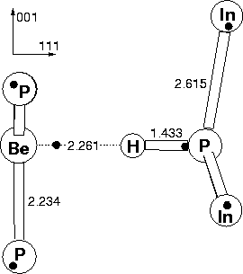

Be was used to determine the preferential site for hydrogen in the passivated Group II acceptor-hydrogen complex. In order to maintain C3v symmetry along the (111) axis, hydrogen can sit in one of only three sites: at the P-Be bond centre, or one of the two anti-bonded sites behind P or Be (see Figure 4.5).
|  |
The structure with H lying in an anti-bonded site behind Be was 1.77 eV higher in energy than the bond centred case, and so was energetically unfavourable. The structure with H anti-bonded behind P was only 0.13 eV higher in energy than the bond centred case, close to the expected errors in our calculation. In all cases the gap was cleared of any acceptor levels by the presence of the hydrogen atom, showing that it has passivated the acceptor activity. In order to determine whether the bond centred or anti-bonded behind P model is correct, it is necessary to examine the LVMs, shown in Table 4.5.
| 2cExperimental | 2cBond Centred | 2cAnti-Bonded behind P | |||
| H | D | H | D | H | D |
| 2236.5 | 1630.9 | 2287.7 | 1639.9 | 2469.9 | 1770.9 |
As can be seen, the calculated LVMs for the bond centred case are in good agreement with experiment (errors of 2.3% and 0.6% for H and D respectively) whereas the anti-bonded results are poor (10.4% and 8.6% for H and D respectively). From this we conclude that H sits in the bond centred location.
The defect is shown in Figure 4.5. The large H-Be separation
shows a lack of bonding between them; the H atom is strongly bonded to
P. The P-H bond length is comparable to the P-H bond lengths in the
hydrogenated vacancy, and compares to an experimental bond length for
the P-H3 molecule of 1.43 Å[49]. The Be-P bond lengths
are similar to crystalline Be-P lengths in Be3P2 (2.16 Å).
The impurity is displaced along the  111
111 direction
away from the hydrogen atom to achieve this, until it is co-planar
with the phosphorus atoms.
direction
away from the hydrogen atom to achieve this, until it is co-planar
with the phosphorus atoms.
Therefore we conclude that substitutional Be acceptors are passivated by a single H sitting at a bond centred position between the Be atom and a nearest neighbour P atom. We find a LVM at 2287.71 cm-1, 2.3% larger than the experimental frequency. There is also an undetected wag mode at 644 cm-1, similar to the case of the C-H defect in GaAs and AlAs [37,72].